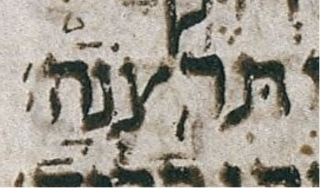

| n | 36 |
| citation:book | Prov |
| citation:c | 23 |
| citation:v | 26 |
| citation:position | 7 |
| author:name | Ben Denckla |
| author:mail | bdenckla@alum.mit.edu |
| author:confirmed | true |
| description | Note that while creating the pointed qere, the transcriber added a dagesh to tsadi |
| lc:folio | Folio_417B |
| lc:column | 2 |
| lc:line | 9 |
| lc:credit | Credit: Sefaria.org. |
| reftext | תִּצֹּֽרְנָה׃ |
| refuni | tav dagesh hiriq tsadi dagesh holam meteg resh sheva nun qamats he sof-pasuq |
| changetext | תִּצֹּֽרְנָה׃ |
| changeuni | tav dagesh hiriq tsadi dagesh holam meteg resh sheva nun qamats he sof-pasuq |
| notes:note | The manuscript’s pointed ketiv (MPK) is תִּרֽצְֹנָהֿ׃. |
| notes:note-2 | The MPK’s ר does not carry a dagesh for the qere’s צ, perhaps because that would be illegal. |
| notes:note-3 | Nor does the MPK’s צ carry a dagesh for the qere’s צ. |
| notes:note-4 | More generally, the MPK is a mess, both in terms of neatness and in terms of what marks ended up on what letters. |
| notes:note-5 | The below-marks make sense, though one has to sort of squint to see what one expects to see. I.e. the below marks follow the expected order, i.e. the qere order: ḥiriq, siluq, sheva, qamats. |
| notes:note-6 | The above-marks is where it gets weird, since the qere צ’s ḥolam ḥaser dot is already present on the צ of the MPK. I would expect the ḥolam ḥaser dot to be on the ר of the MPK, i.e. I would expect it to be in its qere POSITION, not on its qere LETTER. I.e. I would expect תִּרֹֽצְנָה׃. |
| notes:note-7 | Avi, in the MAM documentation, reports that the MPK of א follows this pattern more completely: for the two letters at issue in this ketiv/qere, i.e. for the two transposed letters, the pointing is already present on the LETTER it will “land on” in the qere, not in the POSITION it will land on in the qere. That is to say, א-כתיב is תִּרְצֹּֽנָה׃. I.e. to form the pointed qere from the pointed ketiv, all that needs to be done is to transpose the ר and the צ ALONG with their marks! |
| notes:note-8 | Dotan’s Appendix A notes, as I have noted above, that the ḥolam ḥaser dot would be expected on (the left side of) the ר of the MPK, whereas it is on (the left side of) the צ. Dotan does not note anything about the creation ex nihilo of the dagesh on the qere’s צ. |
| notes:note-9 | A final, unimportant remark is that I’ve put a rafeh above the ה of the MPK but I’m not sure about this; it might belong above the נ. |
| transnotes:transnote:action | Add |
| transnotes:transnote:type | a |
| transnotes:transnote:beforetext | תִּצֹּֽ |
| status | Pending |
| type | NoTextChange |